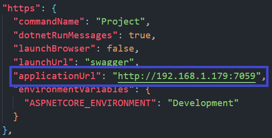
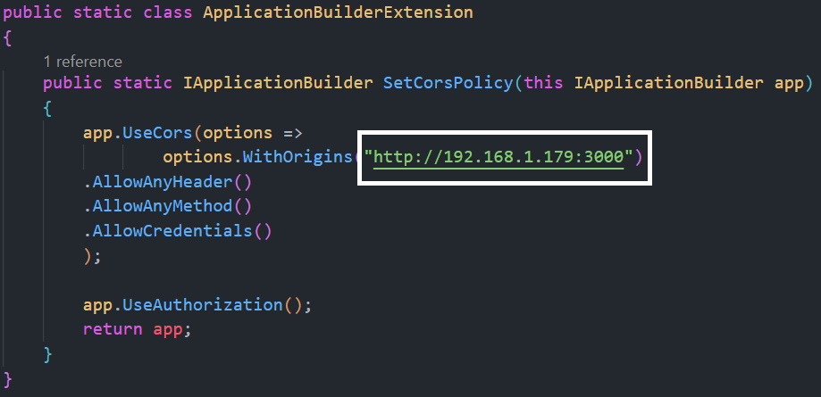

İndirdiğiniz 01-BACK-END klasörün'deki TeamTask.sln dosyasını Visual
Studio ile açın.
Server'ı başlatmadan önce çalışır hale getirmek için aşağıda belirtilen dosyadaki
"applicationUrl"
niteliğin değerini kendi yerel(server'ı çalıştırdığınız) bilgisayarınızın
IPv4 adresi
ile değiştirmelisiniz.

01-BACK-END/TeamTask/TeamTask.API/Properties/launchSettings.json
Yeni değer http://XXX.XXX.X.XXX:7059 şeklinde olmalı
O anki portta '7059' başka bir uygulama çalışıyorsa uygulamalar çakışabilir. Bu sebeple port
numaralarını değiştirmeniz gerekebilir.
Front end'den gelen istekleri karşılayabilmesi için
Cors Policy
(Kökler Arası Kaynak Paylaşımı)
ayarlarını aşağıdaki resimde görüldüğü şekilde yapmalısınız. Buradaki "WithOrigins" sizin Front-end projeniz hangi adreste ve
portta sunumdaysa(çalışıyorsa) onu yazmalısınız ki back-end oradan gelen istekleri kabul
edebilsin.

01-BACK-END/TeamTask/TeamTask.API/Extensions/ApplicationBuilderExtension.cs
Yeni değer http://XXX.XXX.X.XXX:3000
şeklinde olmalı
Projede SQLite veritabanı bulunduğu için ayrıca veritabanı oluşturmanıza gerek yoktur. Eğer
ki veritabanı bulunmuyorsa inceleyip "How
to migrate" migration işlemlerini kolayca yapabilirsiniz.
Package Manager aracılığı ile
add-migration MyFirstDB
update-database
.NET core CLI aracılığı ile
dotnet ef migrations add MyFirstDB
dotnet ef database update